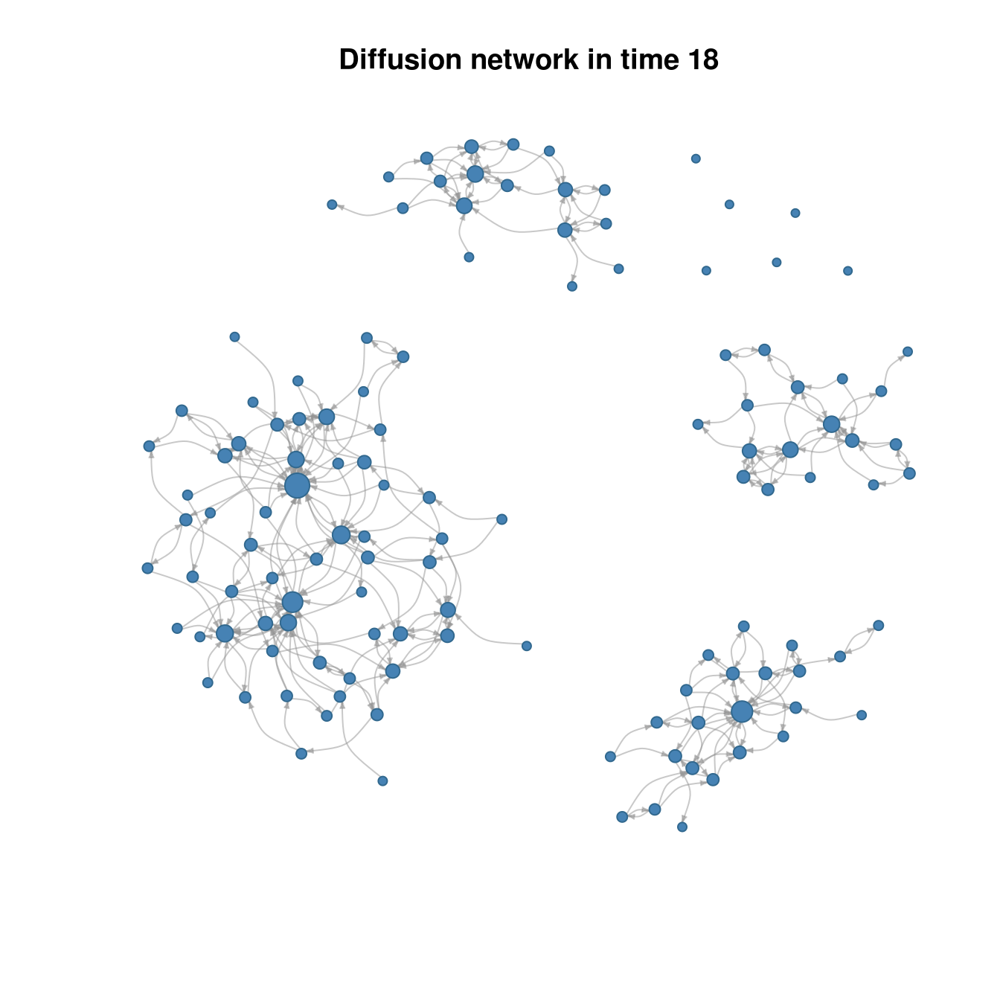
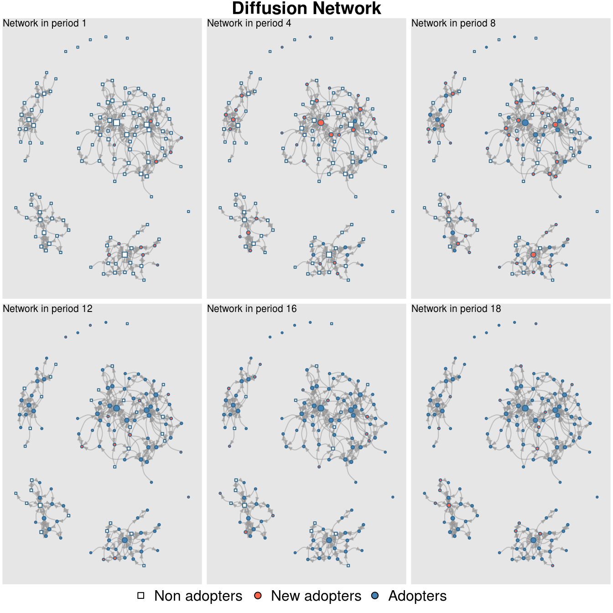
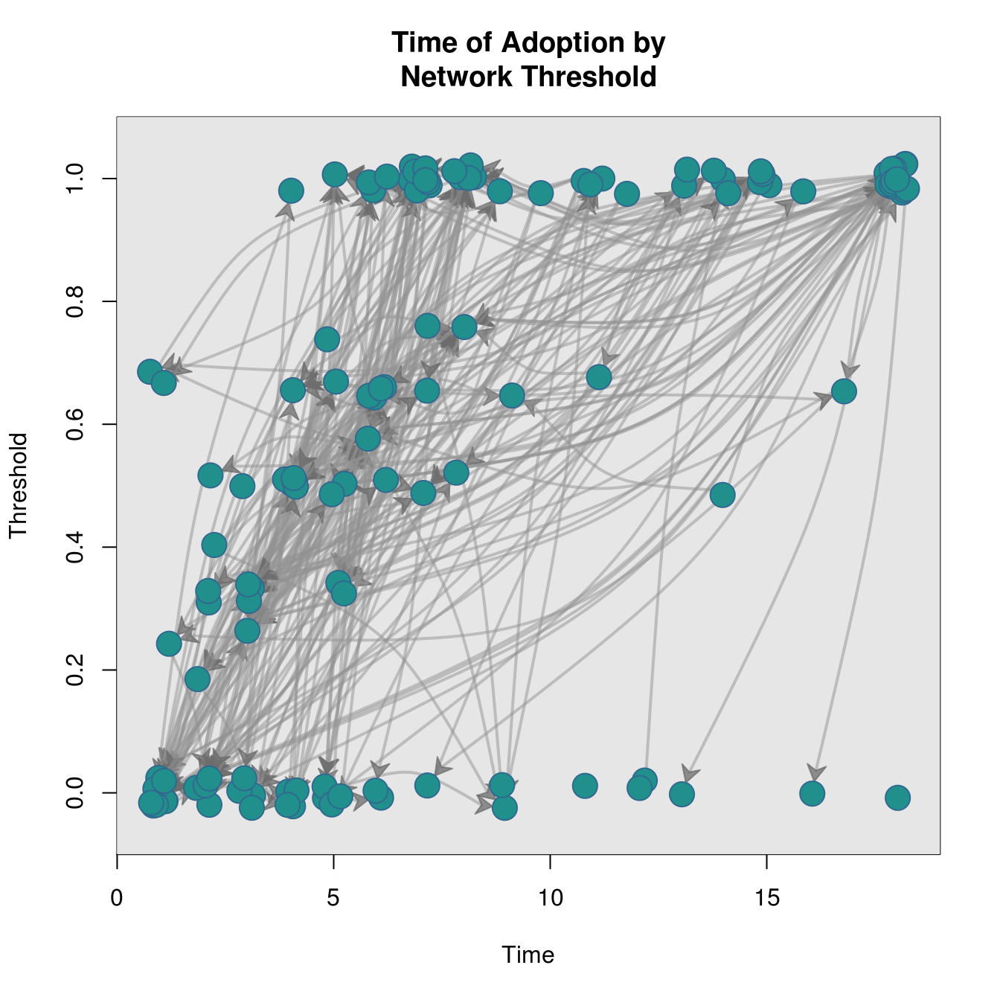
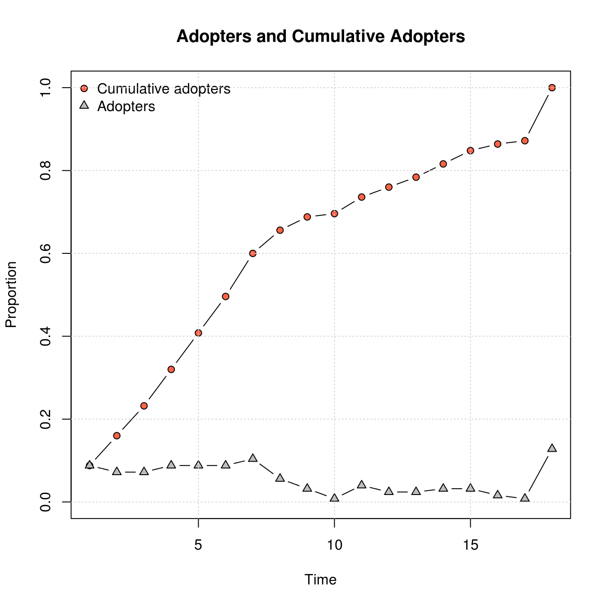
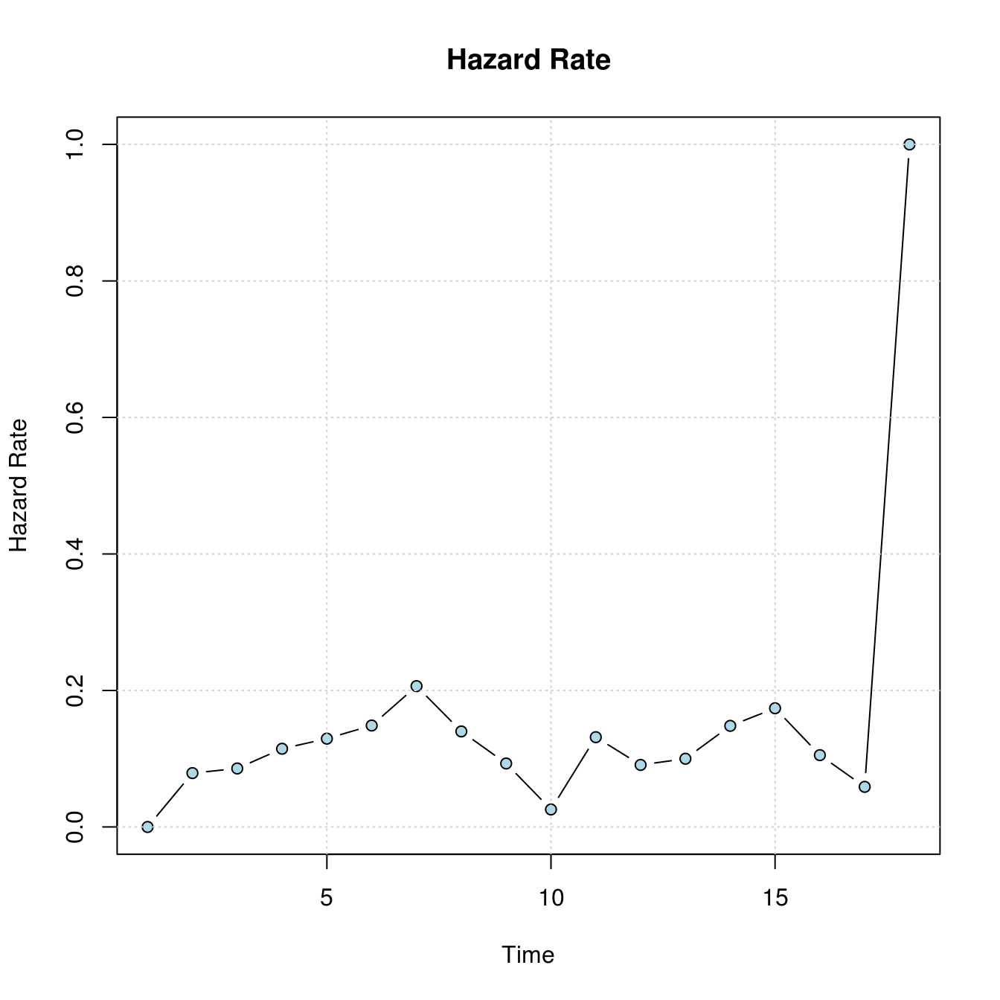
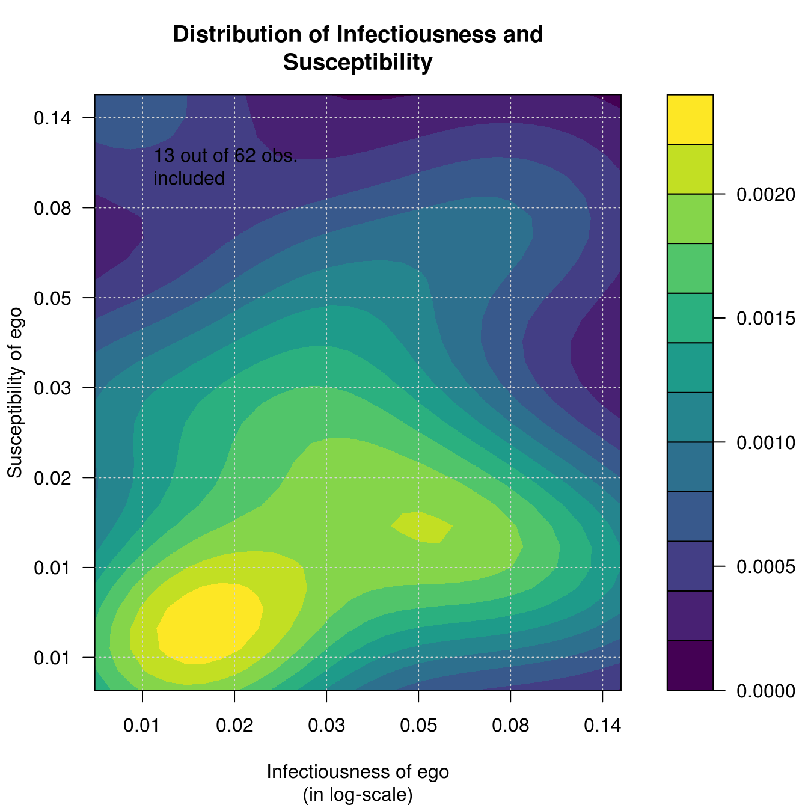
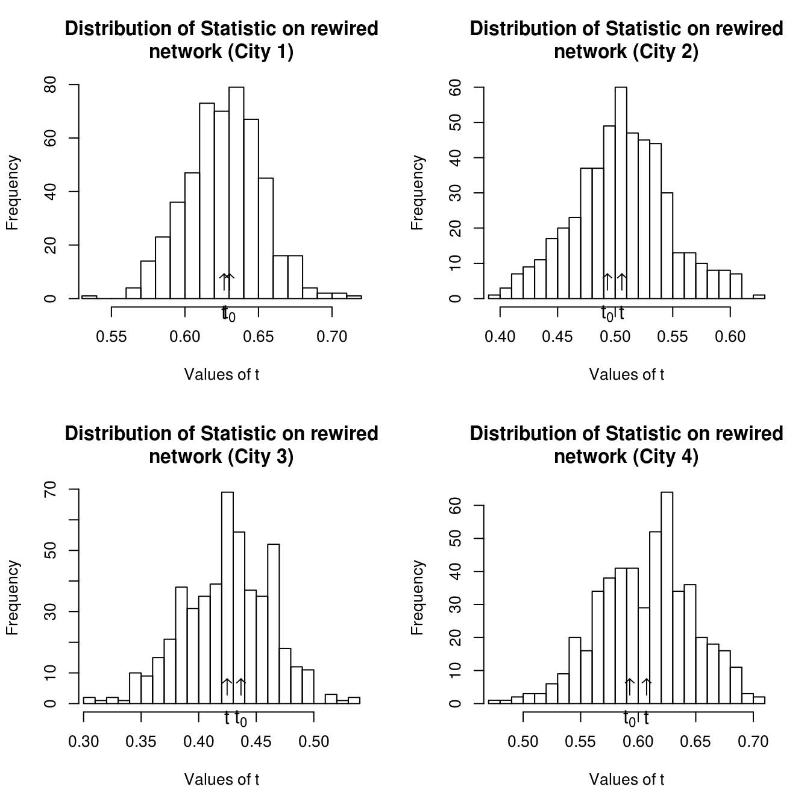

netdiffuseR showcase: Medical Innovations
George G. Vega Yon
February 24, 2016
Source:vignettes/analyzing-medical-innovation-data.Rmd
analyzing-medical-innovation-data.RmdData preprocessing
Loading the raw dataset from the package1.
##
## Attaching package: 'netdiffuseR'## The following object is masked from 'package:base':
##
## %*%Now that we have the data in R, we can start working with it, in particular, we want to do the following things:
- Create a unique id for each individual in the network.
- Remove unsurveyed individuals (we don’t have additional covariates for them).
- Reshaping the data to long format (so we can use it as a panel), and furthermore, as an edgelist.
# Creating unique ids (including for the network data)
othervars <- c("id", "toa", "city")
netvars <- names(medInnovations)[grepl("^net", names(medInnovations))]
for (i in c("id", netvars))
medInnovations[[i]] <- medInnovations[[i]] + medInnovations$city*1000
# Leaving unsurveyed individuals with NA
surveyed <- medInnovations$id
for (i in netvars)
medInnovations[[i]][which(!(medInnovations[[i]] %in% surveyed))] <- NA
# Reshaping data (so we have an edgelist)
medInnovations.long <- reshape(
medInnovations[,c(othervars, netvars)], v.names= "net",
varying = netvars,
timevar = "level", idvar="id", direction="long")Once we have the data in long format, we can coerce it into an diffnet object. This is done by reading the edgelist, obtaining the times of adoption vector and applying the as_diffnet function.
# Coersing the edgelist to an adjacency matrix. Here we are assuming that the
# network is constant through time.
graph <- with(
medInnovations.long,
edgelist_to_adjmat(cbind(id, net), t=18,undirected=FALSE, keep.isolates = TRUE)
)Notice that we have included keep.isolates=TRUE, so, if any element of our edgelist had an NA, NULL or related value, it would still be included in the adjacency matrix. This is specially important if, for example, there are isolated nodes in the data, as if we had not set keep.isolates=TRUE those would had been discarded.
Now we can create our diffnet object. Notice that medInnovations happens to be sorted in the same way as the elements in the adjacency matrix. You can check this by accessing the rownames and sorting medInnovations in that order.
# Just to be sure. Sorting the data!
orddata <- as.numeric(as.factor(rownames(graph[[1]])))
medInnovations <- medInnovations[orddata,]
# Creating a diffnet object
diffnet <- as_diffnet(graph, medInnovations$toa,
vertex.static.attrs = subset(medInnovations, select=c(-id, -toa)))## Warning in new_diffnet(graph, ...): Coercing -toa- into integer.Methods
Once a diffnet object, we can apply the usual generic R functions:

## Dynamic network of class -diffnet-
## Name : Diffusion Network
## Behavior : Unspecified
## # of nodes : 125 (1001, 1002, 1003, 1004, 1005, 1006, 1007, 1008, ...)
## # of time periods : 18 (1 - 18)
## Type : directed
## Final prevalence : 1.00
## Static attributes : city, detail, meet, coll, attend, proage, length, ... (58)
## Dynamic attributes : -## Diffusion network summary statistics
## Name : Diffusion Network
## Behavior : Unspecified
## -----------------------------------------------------------------------------
## Period Adopters Cum Adopt. (%) Hazard Rate Density Moran's I (sd)
## -------- ---------- ---------------- ------------- --------- ----------------
## 1 11 11 (0.09) - 0.02 0.07 (0.03) **
## 2 9 20 (0.16) 0.08 0.02 0.04 (0.03)
## 3 9 29 (0.23) 0.09 0.02 -0.03 (0.03)
## 4 11 40 (0.32) 0.11 0.02 -0.02 (0.03)
## 5 11 51 (0.41) 0.13 0.02 -0.06 (0.03)
## 6 11 62 (0.50) 0.15 0.02 -0.02 (0.03)
## 7 13 75 (0.60) 0.21 0.02 -0.00 (0.03)
## 8 7 82 (0.66) 0.14 0.02 0.01 (0.03)
## 9 4 86 (0.69) 0.09 0.02 0.01 (0.03)
## 10 1 87 (0.70) 0.03 0.02 0.01 (0.03)
## 11 5 92 (0.74) 0.13 0.02 0.02 (0.03)
## 12 3 95 (0.76) 0.09 0.02 0.02 (0.03)
## 13 3 98 (0.78) 0.10 0.02 0.01 (0.03)
## 14 4 102 (0.82) 0.15 0.02 0.04 (0.03)
## 15 4 106 (0.85) 0.17 0.02 0.05 (0.03) *
## 16 2 108 (0.86) 0.11 0.02 0.03 (0.03)
## 17 1 109 (0.87) 0.06 0.02 0.02 (0.03)
## 18 16 125 (1.00) 1.00 0.02 -
## -----------------------------------------------------------------------------
## Left censoring : 0.09 (11)
## Right centoring : 0.00 (0)
## # of nodes : 125
##
## Moran's I was computed on contemporaneous autocorrelation using 1/geodesic
## values. Significane levels *** <= .01, ** <= .05, * <= .1.And the ones included in the package:




Statistical test
Now, we want to know if the threshold model fits here. In order to do so we will use the structure dependency test built in the package, struct_test. We will apply this both in a aggregated level and by city. First we need to subset the data:
# Get cities ids so we can subset the vertices and run the test by city.
city <- diffnet$vertex.static.attrs[,"city"]
# Subsetting diffnet, notice that we can use either indices or ids to create a
# "subdiffnet". In this case we are using indices.
diffnet_city1 <- diffnet[which(city==1),]
diffnet_city2 <- diffnet[which(city==2),]
diffnet_city3 <- diffnet[which(city==3),]
diffnet_city4 <- diffnet[which(city==4),]Notice that by subsetting the set of vertices we have created 4 new diffnet objects, so all the methods and functions work for each one of these, for example, threshold levels in each city
oldpar <- par(no.readonly = TRUE)
par(mfrow=c(2,2))
plot_threshold(diffnet_city1, vertex.label = "", main="Threshold and ToA\nin City 1")
plot_threshold(diffnet_city2, vertex.label = "", main="Threshold and ToA\nin City 2")
plot_threshold(diffnet_city3, vertex.label = "", main="Threshold and ToA\nin City 3")
plot_threshold(diffnet_city4, vertex.label = "", main="Threshold and ToA\nin City 4")
## Warning in plot_infectsuscep.list(graph$graph, graph$toa, t0, normalize, : When
## applying logscale some observations are missing.
Now we run the test for each city. Observe that we can use the parallel package to speedup the test as we will do in the first two cities using two cores (this is done thanks to the boot package).
# Defining the statistic
avgthr <- function(x) mean(threshold(x), na.rm = TRUE)
# Running the test by city
test1 <- struct_test(diffnet_city1, avgthr, 500, ncpus=2, parallel="multicore")
test2 <- struct_test(diffnet_city2, avgthr, 500, ncpus=2, parallel="multicore")
test3 <- struct_test(diffnet_city3, avgthr, 500)
test4 <- struct_test(diffnet_city4, avgthr, 500)
# Running the test aggregated
testall <- struct_test(diffnet, avgthr, 500, ncpus=2, parallel="multicore")
# Printing the outcomes
test1##
## Structure dependence test
## # Simulations : 500
## # nodes : 62
## # of time periods : 18
## --------------------------------------------------------------------------------
## H0: E[beta(Y,G)|G] - E[beta(Y,G)] = 0 (no structure dependency)
## observed expected p.val
## 0.6304 0.6268 0.8920##
## Structure dependence test
## # Simulations : 500
## # nodes : 24
## # of time periods : 18
## --------------------------------------------------------------------------------
## H0: E[beta(Y,G)|G] - E[beta(Y,G)] = 0 (no structure dependency)
## observed expected p.val
## 0.4931 0.5058 0.7400##
## Structure dependence test
## # Simulations : 500
## # nodes : 21
## # of time periods : 18
## --------------------------------------------------------------------------------
## H0: E[beta(Y,G)|G] - E[beta(Y,G)] = 0 (no structure dependency)
## observed expected p.val
## 0.4365 0.4236 0.7240##
## Structure dependence test
## # Simulations : 500
## # nodes : 18
## # of time periods : 18
## --------------------------------------------------------------------------------
## H0: E[beta(Y,G)|G] - E[beta(Y,G)] = 0 (no structure dependency)
## observed expected p.val
## 0.5926 0.6097 0.6720##
## Structure dependence test
## # Simulations : 500
## # nodes : 125
## # of time periods : 18
## --------------------------------------------------------------------------------
## H0: E[beta(Y,G)|G] - E[beta(Y,G)] = 0 (no structure dependency)
## observed expected p.val
## 0.5660 0.5552 0.5320This shows in no City threshold seems to be struture dependent, as after simulating 1,000 networks by rewiring each one of these preserving the degree sequence (using algorithm = "swap" by default in the rewire.args) the null can’t be rejected. Now we can make an histogram of the outcomes by city:
# To make it nicer, we change the parameters in using par
# (see ?par)
oldpar <- par(no.readonly = TRUE)
par(mfrow=c(2,2))
# Now we use the hist method for the -diffnet_boot- class
hist(test1, main="Distribution of Statistic on rewired\nnetwork (City 1)", ask = FALSE)
hist(test2, main="Distribution of Statistic on rewired\nnetwork (City 2)", ask = FALSE)
hist(test3, main="Distribution of Statistic on rewired\nnetwork (City 3)", ask = FALSE)
hist(test4, main="Distribution of Statistic on rewired\nnetwork (City 4)", ask = FALSE)
Retrieving the data to create a panel/envent history/longitudinal data
To use the data for statistical models we can retrieve the data stored in the diffnet object and coerce it as a data.frame. First, we will compute lagged exposure at each time period and add it as a dynamic vertex attribute, including a dummy variable called adopted equal to 1 if the individual adopted at that time point.
## 1 2 3 4 5 6 7 8 9
## 1001 NA 0 0.0000000 0.5000000 1.0000000 1.0000000 1.0000000 1.0000000 1.0000000
## 1002 NA 0 0.0000000 0.5000000 1.0000000 1.0000000 1.0000000 1.0000000 1.0000000
## 1003 NA 0 0.2000000 0.4000000 0.6000000 0.8000000 0.8000000 0.8000000 1.0000000
## 1004 NA 0 0.3333333 0.3333333 0.3333333 0.3333333 0.6666667 0.6666667 0.6666667
## 1005 NA 0 0.0000000 0.0000000 0.0000000 1.0000000 1.0000000 1.0000000 1.0000000
## 1006 NA 0 0.3333333 0.6666667 0.6666667 1.0000000 1.0000000 1.0000000 1.0000000
## 10 11 12 13 14 15 16
## 1001 1.0000000 1.0000000 1.0000000 1.0000000 1.0000000 1.0000000 1.0000000
## 1002 1.0000000 1.0000000 1.0000000 1.0000000 1.0000000 1.0000000 1.0000000
## 1003 1.0000000 1.0000000 1.0000000 1.0000000 1.0000000 1.0000000 1.0000000
## 1004 0.6666667 0.6666667 0.6666667 0.6666667 0.6666667 0.6666667 0.6666667
## 1005 1.0000000 1.0000000 1.0000000 1.0000000 1.0000000 1.0000000 1.0000000
## 1006 1.0000000 1.0000000 1.0000000 1.0000000 1.0000000 1.0000000 1.0000000
## 17 18
## 1001 1.0000000 1.0000000
## 1002 1.0000000 1.0000000
## 1003 1.0000000 1.0000000
## 1004 0.6666667 0.6666667
## 1005 1.0000000 1.0000000
## 1006 1.0000000 1.0000000# Netdiffuser automatically identifies whether the input is dynamic or not.
diffnet[["lagged_expo"]] <- expo
diffnet[["adopted"]] <- toa_mat(diffnet)$cumadoptNow we can create a data frame from our diffnet object
The following model illustrates how can we use netdiffuseR to run a lagged exposure model. In this (toy) model we are including fixed effects for time (per), city, belief in science (belief) and age, and only including observations prior to the adoption of the behavior, and excluding observations from the last time point.
# Running a model
summary(
glm(adopted ~ lagged_expo + factor(per) + factor(city) + belief +
proage + I(proage^2),
dat = mydata,
subset = (per <= toa) & per < 18,
family = binomial(link="logit"))
)##
## Call:
## glm(formula = adopted ~ lagged_expo + factor(per) + factor(city) +
## belief + proage + I(proage^2), family = binomial(link = "logit"),
## data = mydata, subset = (per <= toa) & per < 18)
##
## Deviance Residuals:
## Min 1Q Median 3Q Max
## -0.9291 -0.5547 -0.4294 -0.2990 2.6441
##
## Coefficients:
## Estimate Std. Error z value Pr(>|z|)
## (Intercept) -4.86017 0.74267 -6.544 5.98e-11 ***
## lagged_expo 0.06835 0.36290 0.188 0.85060
## factor(per)3 0.11026 0.49879 0.221 0.82505
## factor(per)4 0.36896 0.49420 0.747 0.45532
## factor(per)5 0.62556 0.49461 1.265 0.20595
## factor(per)6 0.79024 0.51149 1.545 0.12235
## factor(per)7 1.05813 0.52363 2.021 0.04331 *
## factor(per)8 0.84961 0.57908 1.467 0.14232
## factor(per)9 0.46900 0.67474 0.695 0.48700
## factor(per)10 -0.89617 1.10056 -0.814 0.41548
## factor(per)11 0.90279 0.64682 1.396 0.16280
## factor(per)12 0.44730 0.74503 0.600 0.54826
## factor(per)13 0.64460 0.75892 0.849 0.39567
## factor(per)14 1.13806 0.71444 1.593 0.11117
## factor(per)15 1.32137 0.72124 1.832 0.06694 .
## factor(per)16 0.06475 1.12636 0.057 0.95416
## factor(per)17 0.09697 1.12815 0.086 0.93150
## factor(city)2 -0.05152 0.32958 -0.156 0.87579
## factor(city)3 -0.07965 0.31878 -0.250 0.80270
## factor(city)4 -0.19764 0.33718 -0.586 0.55777
## belief 0.50842 0.16589 3.065 0.00218 **
## proage 0.94983 0.34181 2.779 0.00546 **
## I(proage^2) -0.10620 0.04736 -2.242 0.02495 *
## ---
## Signif. codes: 0 '***' 0.001 '**' 0.01 '*' 0.05 '.' 0.1 ' ' 1
##
## (Dispersion parameter for binomial family taken to be 1)
##
## Null deviance: 585.45 on 825 degrees of freedom
## Residual deviance: 548.47 on 803 degrees of freedom
## (155 observations deleted due to missingness)
## AIC: 594.47
##
## Number of Fisher Scoring iterations: 6As shown, we find no lagged exposure effects and the adoption was mainly drive by belief in science and age of the MD. Notice that instead of calling glm directly, we could have also used the diffreg function (a wrapper of glm that does all the filtering and exposure computing for us) as follows:
##
## Call:
## glm(formula = Adopt ~ exposure + factor(per) + factor(city) +
## belief + proage + I(proage^2), family = binomial(link = "logit"),
## data = dat, subset = ifelse(is.na(toa), TRUE, toa >= per))
##
## Deviance Residuals:
## Min 1Q Median 3Q Max
## -0.9291 -0.5505 -0.4245 -0.2887 2.6441
##
## Coefficients:
## Estimate Std. Error z value Pr(>|z|)
## (Intercept) -4.86017 0.74267 -6.544 5.98e-11 ***
## exposure 0.06835 0.36290 0.188 0.85060
## factor(per)3 0.11026 0.49879 0.221 0.82505
## factor(per)4 0.36896 0.49420 0.747 0.45532
## factor(per)5 0.62556 0.49461 1.265 0.20595
## factor(per)6 0.79024 0.51149 1.545 0.12235
## factor(per)7 1.05813 0.52363 2.021 0.04331 *
## factor(per)8 0.84961 0.57908 1.467 0.14232
## factor(per)9 0.46900 0.67474 0.695 0.48700
## factor(per)10 -0.89617 1.10058 -0.814 0.41549
## factor(per)11 0.90279 0.64682 1.396 0.16280
## factor(per)12 0.44730 0.74503 0.600 0.54826
## factor(per)13 0.64460 0.75892 0.849 0.39567
## factor(per)14 1.13806 0.71444 1.593 0.11117
## factor(per)15 1.32137 0.72124 1.832 0.06694 .
## factor(per)16 0.06475 1.12636 0.057 0.95416
## factor(per)17 0.09697 1.12815 0.086 0.93150
## factor(per)18 19.74176 584.21139 0.034 0.97304
## factor(city)2 -0.05152 0.32958 -0.156 0.87579
## factor(city)3 -0.07965 0.31878 -0.250 0.80270
## factor(city)4 -0.19764 0.33718 -0.586 0.55777
## belief 0.50842 0.16589 3.065 0.00218 **
## proage 0.94983 0.34181 2.779 0.00546 **
## I(proage^2) -0.10620 0.04736 -2.242 0.02495 *
## ---
## Signif. codes: 0 '***' 0.001 '**' 0.01 '*' 0.05 '.' 0.1 ' ' 1
##
## (Dispersion parameter for binomial family taken to be 1)
##
## Null deviance: 652.73 on 841 degrees of freedom
## Residual deviance: 548.47 on 818 degrees of freedom
## (155 observations deleted due to missingness)
## AIC: 596.47
##
## Number of Fisher Scoring iterations: 15Note that there is a
diffnetversion of the same dataset in the package,medInnovationsDiffNet.↩